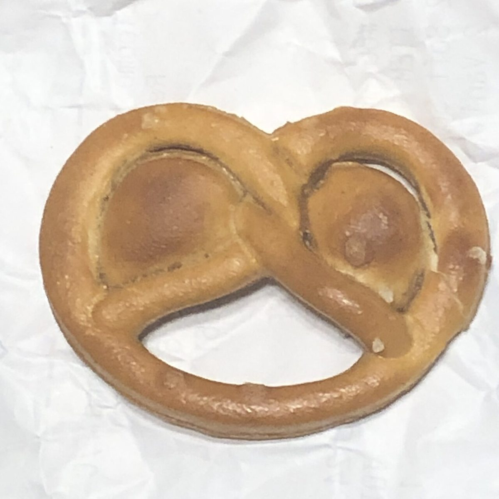

カフェ / 〒446-0053 愛知県安城市
8hachidori
cafe
愛知県安城市高棚町にあるカフェ「hachidori cafe」のご案内ページです。営業時間やメニューなど、詳しいことは準備中。このサイトは数字の8を一筆でなぞる周回コースに、5ページを見立てています。
地点の丸を押すと各ページへ進めます
制作側の連想
屋号の「はち」から、8の字のコースへ
これは制作側の連想で、お店の理念・由来とは無関係です。店名の由来は分かりません。制作側は屋号の読みの「はち」から数字の8を思い浮かべ、8を一筆でなぞるように進む周回コースを、このサイトの案内図にしました。交差点がホーム、上の輪にメニューと口コミ、下の輪に店のこととアクセスが並びます。
コース沿いの物たち(イメージ)
ふたつの輪と、粒と、ともし火。
写真は物や素材のクローズアップで、撮影地が不明のフリー素材です。お店のものではありません。


ご案内
お店のこと(確認できたものだけ)
| 所在地 | 〒446-0053 愛知県安城市高棚町井池60-4 |
|---|---|
| 電話 | 0566-55-3348 |
| 営業時間 | 準備中 |
| 定休日 | 準備中 |
| ご予約 | 準備中 |
| 駐車場 | 準備中 |
| SNS | Instagram @hachidoricafe |